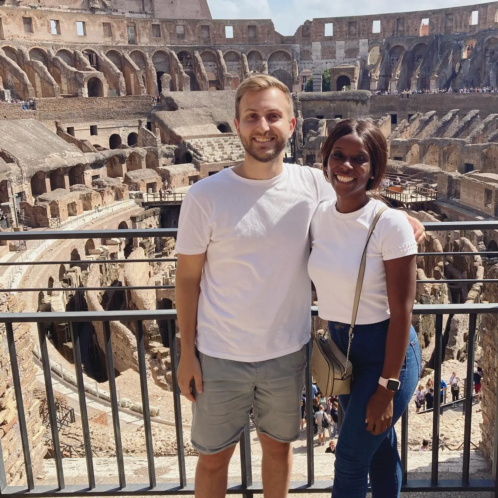
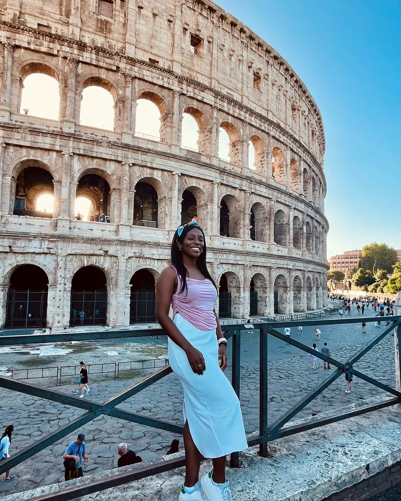
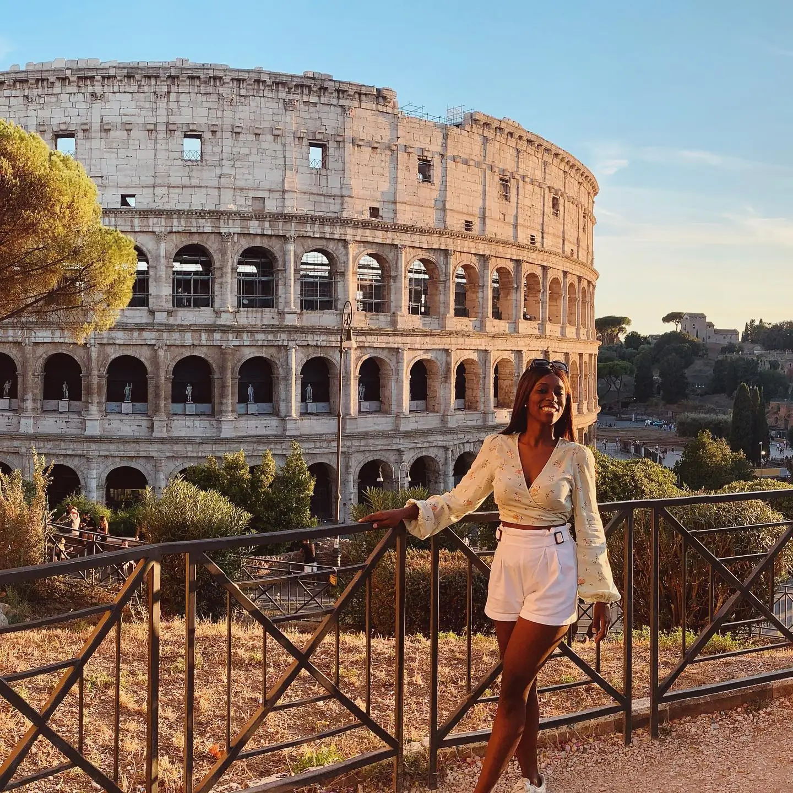

Must-see01
The Colosseum
📍 Piazza del Colosseo
Seeing the Colosseum in person is jaw-dropping. It's nearly 2,000 years old and even bigger than you imagine. Go inside to see the arena and the underground passages, then walk around the outside at golden hour, when the stone glows orange. Book your tickets in advance: the lines are long and time slots sell out.
Book aheadGo at golden hour